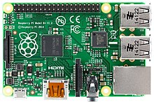
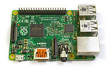
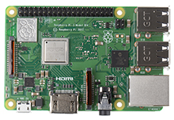
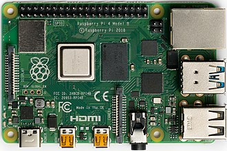
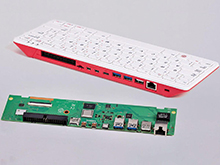
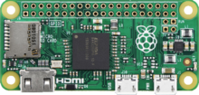

Raspberry Pi 1 model B+ prvi put je pušten na tržište u februaru 2012. Početna cena bila je 25US$ (za modele A, B+), 20US$ (za model A+), 35US$ (za RPi 1 model B,RPi 2 model B, RPi 3), 30US$ (CM). Kao operativni sistem na raspolaganju su Linux (e.g. Raspbian), RISC OS,FreeBSD, NetBSD, Plan 9, Inferno,AROS. Koristi CPU 700 MHz single-core ARM1176JZF-S (za modele A, A+, B, B+, CM). Memorija od 256 MB (za modele A, A+ rev 1, B rev 1), 512 MB (za modele A+ rev 2, B rev 2, B+, CM ). Za skladištenje koristi SDHC slotove ( za modele A i B), MicroSDHCslotove (za modele A+ i B+), 4 GB eMMC IC čip (za model CM). Grafiku predstavlja Broadcom VideoCore IV. Snaga za napajanje ovih modela uključuje 1.5 W ( za model A), 1.0 W ( za model A+),3.5 W ( za model B), 3.0 W ( za model B+), ili 0.8 W (za model Zero)
Raspberry Pi B+
Raspberry Pi 2 model B pušten na tržište u februaru 2015. Početna cena bila je 35US$.Operativni sistem na raspolaganju su svi operativni sistemi prethonika i Windows 10 IoT Core. Koristi 900 MHz quad-core ARM Cortex-A7. Memorija od 1GB. Za skladištenje koristi MicroSDHC slotove. Grafiku predstavlja Broadcom VideoCore IV.Snaga za napajanje ovog modela iznosi 4.0 W.
Raspberry Pi 2
Raspberry Pi 3 model B je najnoviji model pušten na tržište u februaru 2016.Cena bila je 35US$. Kao operativni sistem na raspolaganju su : Raspbian,Ubuntu MATE,Snappy Ubuntu Core,Windows 10 IoT Core,RISC OS,Debian,Arch Linux ARM. Koristi 1200 MHz quad-core ARM Cortex-A53 procesor.Poseduje memorija od 1GB. Za skladištenje koristi MicroSDHC slot kao i njegovi prethodnici. Grafiku predstavlja Broadcom VideoCore IV ali na većim clock frekvencijama nego njegovi prethodnici koji su radil na 250 MHz. Snaga za napajanje ovog modela iznosi 4.0W
Raspberry Pi 3
Raspberry Pi 4 Model B je objavljen u junu 2019. sa 1,5 GHz 64-bitnim četvorojezgarnim ARM Cortek-A72 procesorom, ugrađenim 802.11ac Vi-Fi, Bluetooth 5, punim gigabitnim Ethernetom (propusnost nije ograničena), dva USB 2.0 porta, dva USB 3.0 porta, 1–8 GB RAM-a i podrška za dva monitora preko para mikro HDMI (HDMI tip D) portova za rezoluciju do 4K. Verzija sa 1 GB RAM-a je napuštena i cene verzije od 2 GB su snižene. Verzija od 8 GB ima revidiranu ploču. Pi 4 se takođe napaja preko USB-C porta, što omogućava dodatno napajanje perifernim uređajima koji se nalaze u nizu, kada se koristi sa odgovarajućom PSU. Ali Pi može da radi samo sa 5 volti, a ne sa 9 ili 12 volti kao drugi mini računari ove klase. Početna Raspberry Pi 4 ploča ima grešku u dizajnu gde USB kablovi treće strane sa oznakom e, kao što su oni koji se koriste na Apple MacBook računarima, pogrešno je identifikuju i odbijaju da obezbede napajanje. Tom's Hardvare je testirao 14 različitih kablova i otkrio da se 11 od njih uključilo i napajalo Pi bez problema. Greška u dizajnu je ispravljena u reviziji 1.2 ploče, objavljenoj krajem 2019. godine. Sredinom 2021. godine pojavili su se modeli Pi 4 B sa poboljšanim Broadcom BCM2711C0. Proizvođač sada koristi ovaj čip za Pi 4 B i Pi 400. Međutim, frekvencija pričvršćivanja Pi 4 B nije povećana u fabrici.
Raspberry Pi 4 B
Raspberry Pi 400 je pušten u prodaju u novembru 2020. Moderan primer računara sa tastaturom, sadrži 4 GB LPDDR4 RAM-a na prilagođenoj ploči koja je izvedena iz postojećeg Raspberry Pi 4 u kombinaciji sa tastaturom u jednom kućištu. Kućište je izvedeno iz onog za Raspberry Pi tastaturu.[31] Robusno rešenje za hlađenje (tj. široka metalna ploča) i unapređeno napajanje u komutiranom režimu [32] omogućavaju Raspberry Pi 400 Broadcom BCM2711C0 procesor da radi na 1,8 GHz, što je 20% brže od Raspberry Pi 4 na kojem se zasniva.
Raspberry Pi 400
Raspberry Pi Zero model pušten na tržište u Novebru 2015.Cena ovog modela bila je 5US$.Operativni sistem na raspolaganju su svi operativni sistemi kao i kod Raspberry Pi 1 modela i sistem koji je ista kompanija optimizovala bas za Raspberry Pi uređaje-modele Linux (e.g. Raspbian). Koristi 1000 MHz single-core ARM1176JZF-S. Memorija od 512 MB RAM.Za skladištenje koristi MicroSDHC slotove kao i svi prethodnici sto je postao i standard kod ovih uređaja.Snaga za napajanje ovog modela iznosi 0.8 W
Raspberry Pi Zero
Raspberry Pi Pico